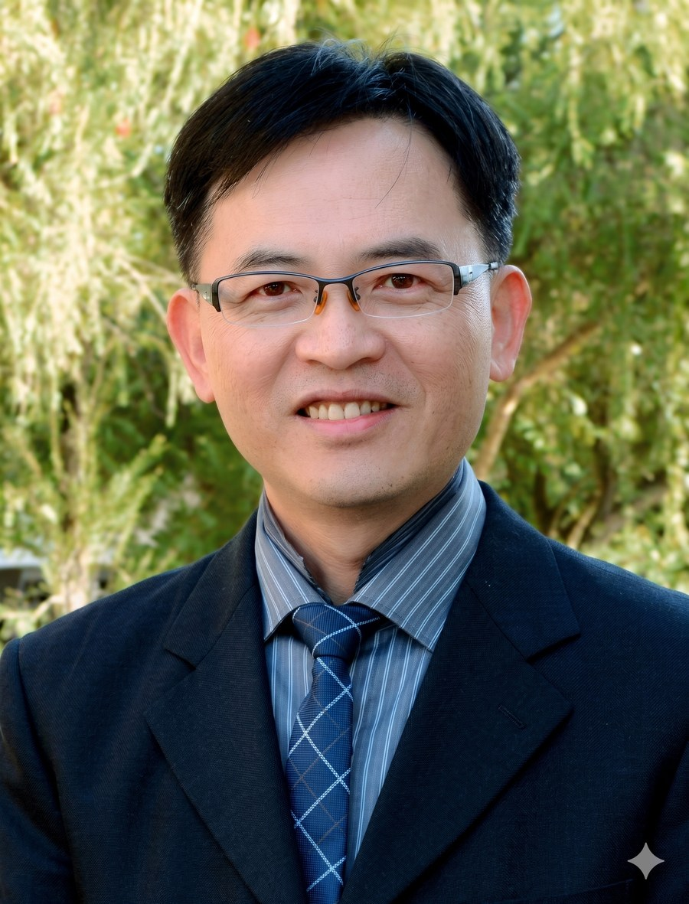
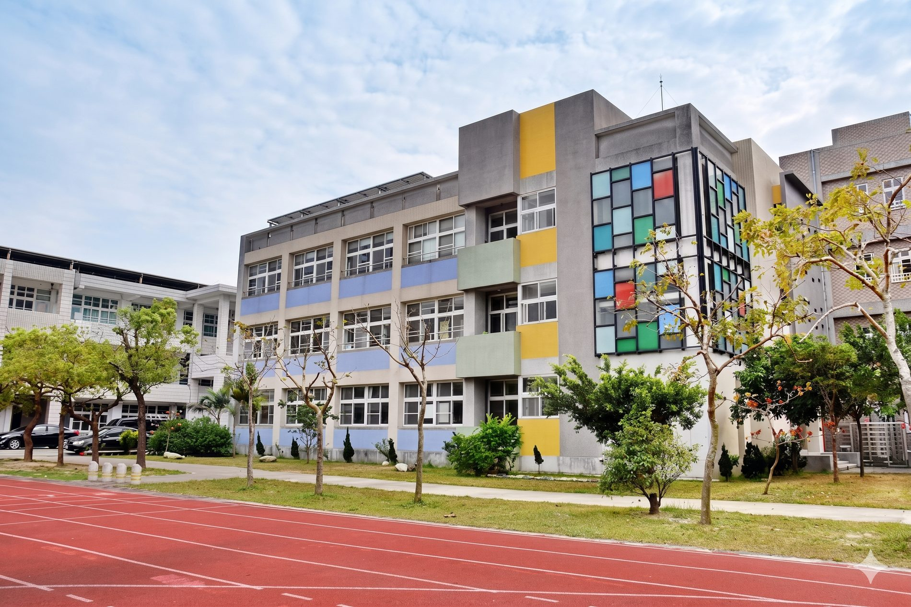
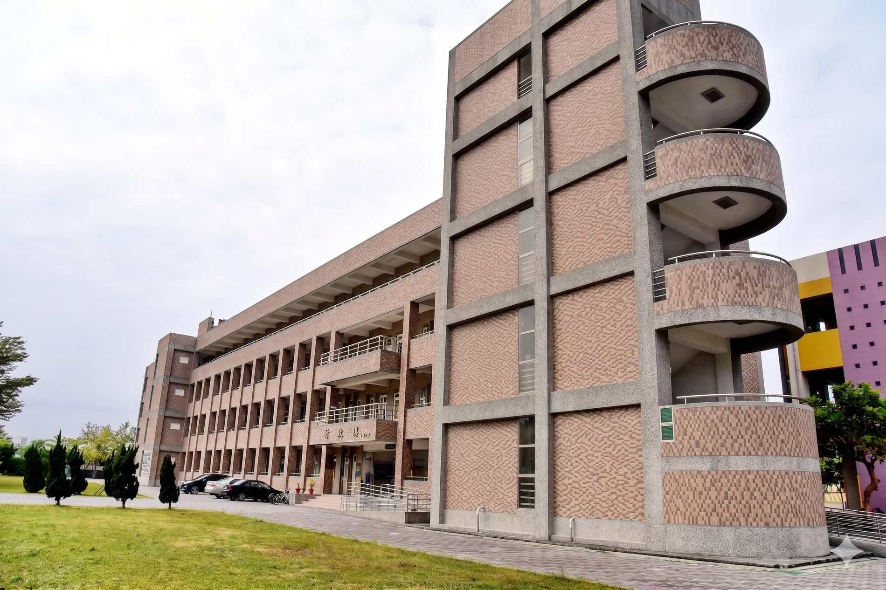
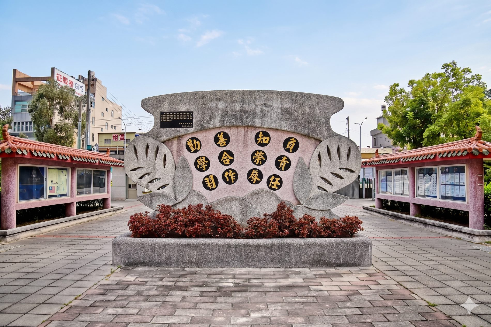

熱誠
Wholehearted 熱誠
We bring our whole selves to the work — the teacher who stays late, the student who tries the hard question one more time. Enthusiasm is the first subject we teach.
我們把整個自己投入其中——晚走的老師、把難題再試一次的學生。熱誠，是我們教的第一門課。

Old enough to show the world our own town — in two languages. 夠大了，可以用兩種語言，親自把家鄉介紹給世界。
Taibao takes its name from a man and his honour. Wang De-lu (1770–1842), born in the village then called Gouwei, rose to become a naval Supreme Commander — the highest-ranking official Taiwan produced under the Qing. When the court granted him the title “Grand Guardian of the Heir Apparent” (太子太保), his home village renamed itself Taibao in his honour. It is, perhaps, the only town in Taiwan named after an official's title.
Our school opened on this ground in 1968. Today Taibao is the seat of the Chiayi County government and a southern gateway — the high-speed rail and the Southern Branch of the National Palace Museum both stand within the town. Elementary children learn that story; our students are old enough to tell it — to a visitor, a sister school, the world — in English.
太保之名，來自一個人與他的封號。王得祿（1770–1842）出生在當時叫「前溝尾」的村庄，後來官至水師提督——清代官位最高的台灣人。朝廷賜予他「太子太保」的頭銜，故鄉便以「太保」為名來紀念他。這或許是全台灣唯一以官銜命名的城市。
我們的學校，民國 57 年（1968）在這片土地上開學。今天的太保，是嘉義縣政府所在地、是南台灣的門戶——高鐵與故宮南院都在鎮上。小學的孩子聽這個故事；而我們的學生，已經夠大，可以親口講這個故事——對一位訪客、一所姊妹校、對世界——用英文。
We bring our whole selves to the work — the teacher who stays late, the student who tries the hard question one more time. Enthusiasm is the first subject we teach.
我們把整個自己投入其中——晚走的老師、把難題再試一次的學生。熱誠，是我們教的第一門課。
A junior high is where children become teenagers. We watch each one closely — because at this age, being noticed by an adult who cares can change the shape of a life.
國中，是孩子長成青少年的地方。我們仔細看顧每一個人——因為在這個年紀，被一個在乎你的大人看見，能改變一生的形狀。
We teach students to see what is well made — in a painting, an essay, a kept promise. Taste is not a luxury; it is how a young person learns to want good things.
我們教學生看見「做得好」的東西——一幅畫、一篇文章、一個守住的承諾。審美不是奢侈品；它是一個年輕人學著去渴望美好事物的方式。
A healthy body carries a learning mind. With its own sports classes and a county baseball stadium next door, Taibao keeps its teenagers strong, on the field and off.
健康的身體，承載一顆學習的心。有自己的體育班、又緊鄰縣立棒球場，太保讓青少年保持強壯——在球場上，也在球場外。
And one power our county names out loud for every child: English. Among the “Five Powers of Chiayi Education” — character, identity, water-safety, health, and English — we take the last one personally. 還有一種能力，我們的縣為每個孩子大聲說出來：英語力。在「嘉教 5 讚」——品格力、認同力、親水力、健康力、英語力——之中，最後這一項，我們放在心上、當成自己的事。

A chemistry teacher by training · whole-person education · Appointed August 2024 · 民國 113 年 8 月就任
Three years — that is all we have each student. Our job is to make those three years the ones in which a child first dares to speak to the world, and finds the world answers back.
At the county English Day, Taibao students have taken first place in English storytelling and earned honours in English reading and Reader's Theater. These are not paper scores — they are children standing up, in front of judges, and performing in a second language.
在嘉義縣英語日學藝競賽，太保學生拿下英語說故事第一名，並在英語閱讀與讀者劇場獲獎。這些不是紙上的分數——而是孩子站起來，在評審面前，用第二語言演出。
Taibao takes part in the Ministry's international-education programme, with pilot visits and hosting on campus. Hosting is the harder, braver half of exchange: it asks our students to welcome strangers and explain their own world — the best English lesson there is.
太保參與教育部國際教育計畫，在校內進行先導參訪與接待。接待，是交流中更難、也更勇敢的那一半：它要求學生去歡迎陌生人、去解釋自己的世界——這是最好的一堂英語課。
Taibao runs its own sports classes, and the Chiayi County Baseball Stadium stands right in our town. On a baseball field, English already lives — “safe,” “out,” “home run” — beside the Mandarin called from the dugout. Sport is where our athletes meet their first fluent English.
太保有自己的體育班，而嘉義縣立棒球場就在我們鎮上。在棒球場上，英語早就活著——「safe」「out」「home run」——和休息區喊出的中文並肩存在。運動，是我們的選手遇見第一句流利英語的地方。
A bilingual school begins with bilingual teachers. Taibao's staff take part in in-service bilingual-teaching credit courses — subject teachers learning to carry their lessons in English. The adults model the very thing we ask of the students: keep learning the second language.
一所雙語學校，始於雙語的老師。太保的教師參加雙語教學在職增能學分班——領域老師學著用英語承載自己的課。大人示範著我們對學生的要求：把第二語言，一直學下去。



We welcome teachers, parents, alumni, and friends — from across Chiayi, from all of Taiwan, and from anywhere in the world. Three minutes from the high-speed rail, we are easy to reach — come and let our students show you their town.
歡迎嘉義各地、全台灣、以及世界各地的教育工作者、家長、校友與朋友。離高鐵僅三分鐘，我們很好抵達——來吧，讓我們的學生，帶你認識他們的家鄉。